Yoichi
Yoichi · Hokkaido
Yoichi
Highlighted on the Hokkaido map.
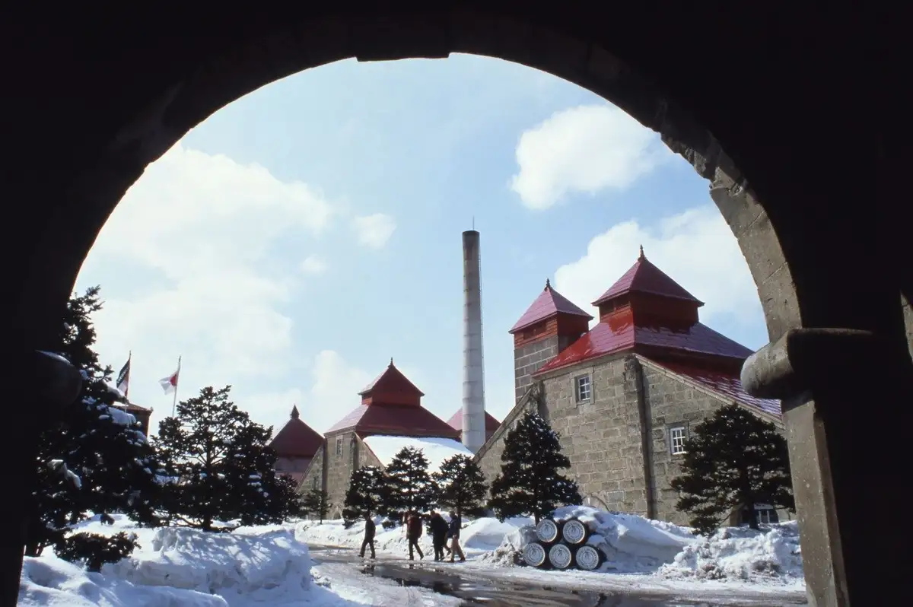
Stay
テントサウナがある家・余市町
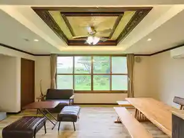
Tentosauna Gaaru Ie Yoichi Machi
よいち！よいち！！よいち！！！
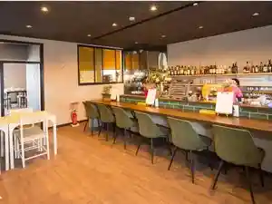
Yoichi ! Yoichi ! ! Yoichi ! ! !
ゲストハウス余市
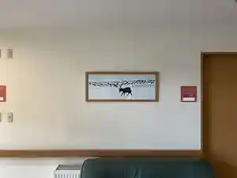
Gesutohausu Yoichi
ASOBIBA Yoichi Onsenside
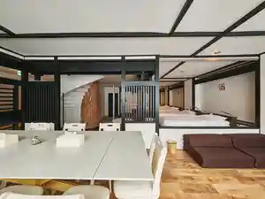
Asobiba Yoichi Onsenside
ZABOCON YOICHI VILLA
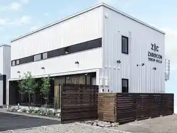
Zabocon Yoichi Villa
MATRYOSHKA HOUSE
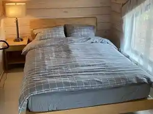
Matryoshka House
エーヴランド ホテル＆ゴルフクラブ
Eevurando Hoteru & Gorufukurabu
Dining
Yoichi LOOP
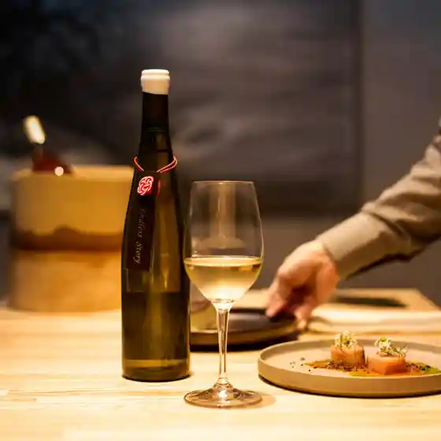
Yoichi Loop
ワイン、ときどき豚
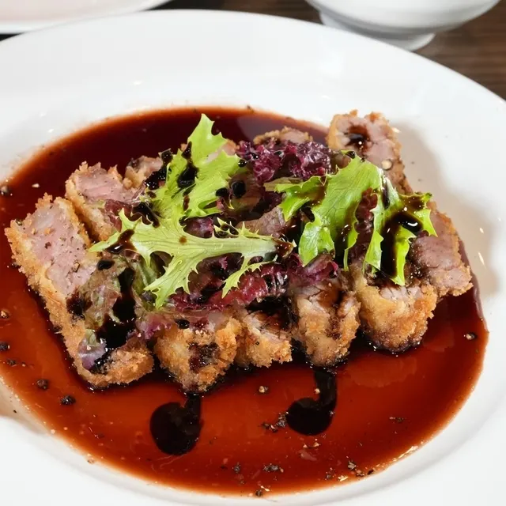
Wain , Tokidoki Buta
うに専門店世壱屋 余市実家店
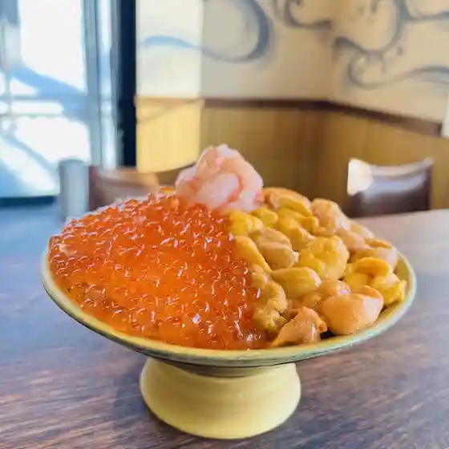
Uni Senmonten Yo Ichi Ya Yoichi Jikka Mise
Lift Up 余市
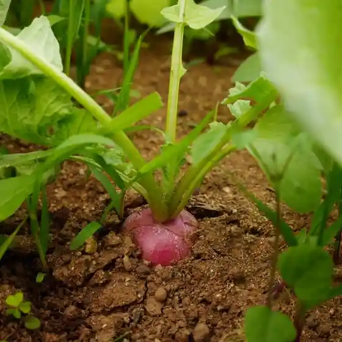
Lift Up Yoichi
カフェガッティーナ
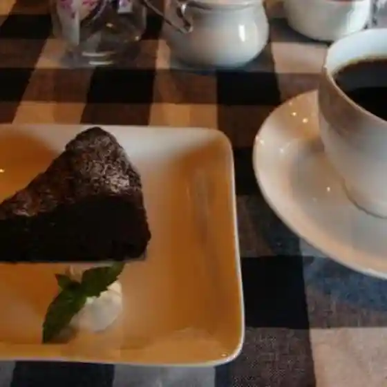
Kafegatteiina
FARM TO PEEL
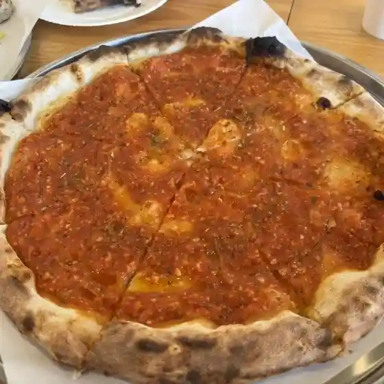
Farm To Peel
明月苑
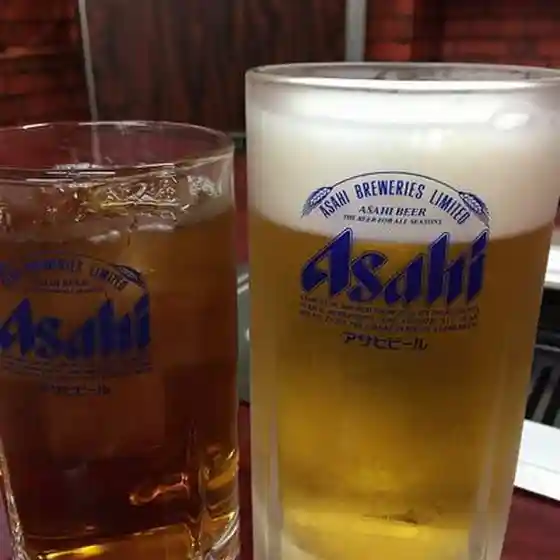
Meigetsu En
馬場商店
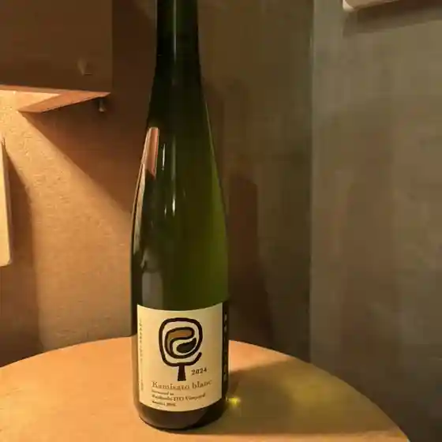
Baba Shouten
メルシースコーン
Merushiisukoon
長谷川成吉思汗 余市店
Hasegawa Jingisukan Yoichi Mise
farmam’s cafe カフェくらぶ
Farmam ’ S Cafe Kafe Kurabu
ぱん処
Pan Tokoro
居酒屋くいに恋
Izakaya Kuini Koi
うに丼専科 うにどころ
Uni Donburi Senka Unidokoro
コープさっぽろ 余市店
Koopu Sapporo Yoichi Mise
パティスリー マウ
Pateisurii Mau
Punch
Punch
中根酒店
Nakane Saketen
がんがら
Gangara
民宿くどう
Minshuku Kudou
吉田観光農園
Yoshida Kankou Nouen
ニッカウヰスキー 余市蒸溜所
Nikkauisukii Yoichi Jouryuu Tokoro
浜善
Hama Zen
小麦の奴隷 余市店
Komugi No Dorei Yoichi Mise
Sights
Nikkauisukii Hokkaido Kojo Yoichi Joryu Tokoro
Nikkauisukii Hokkaido Kojo Yoichi Joryu Tokoro
Nitori Tourism Orchard
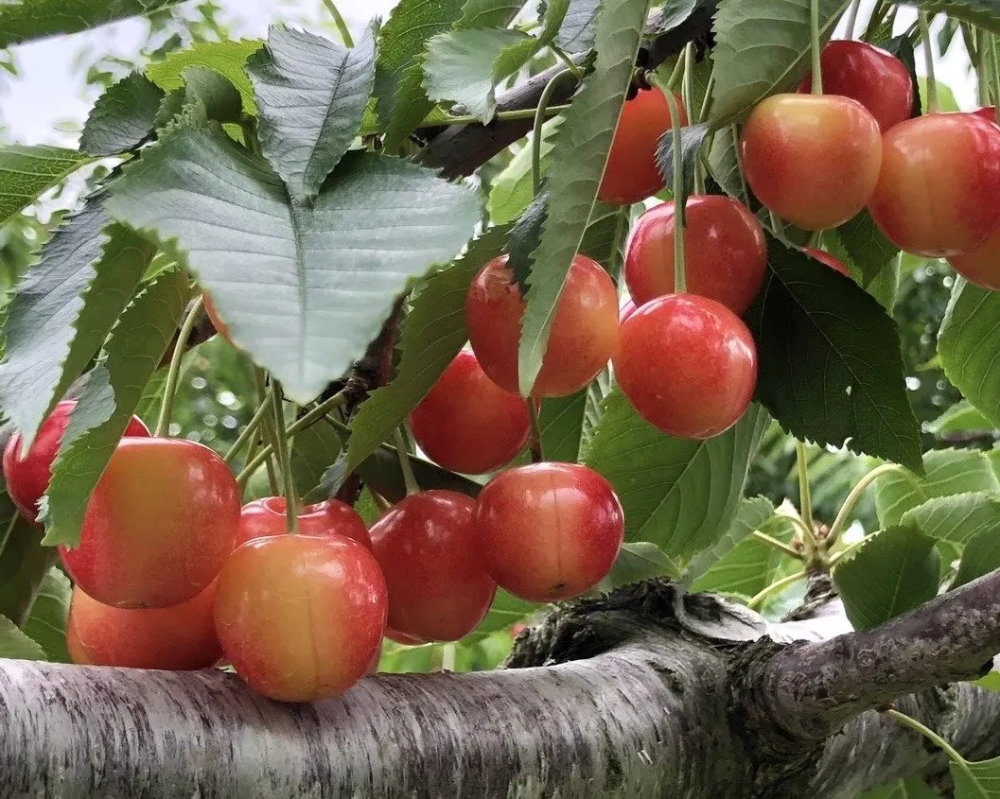
Nitori Tourism Orchard
Ochigabiwainarii
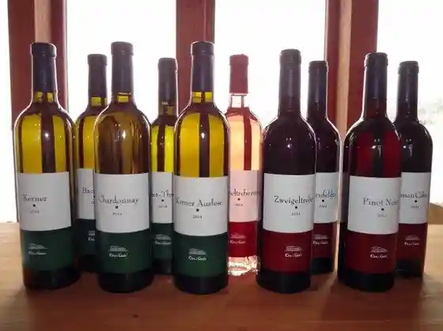
Ochigabiwainarii
Fugoppe Cave
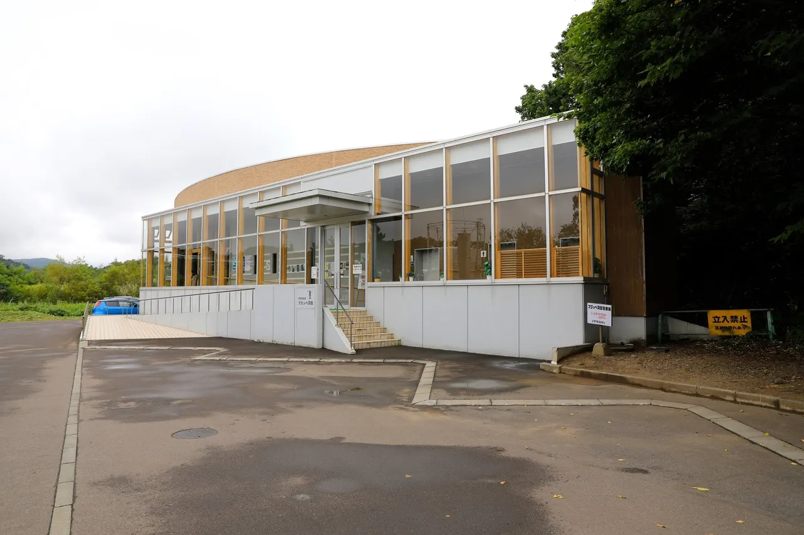
Fugoppe Cave